10 Podman pods¶
10.1 Doelstellingen¶
Na dit hoofdstuk beheerst de student het volgende:
-
uitleggen wat een pod is en welke rol de infra-container daarin speelt;
-
een pod aanmaken, er containers aan toevoegen en de pod opvolgen met podman pod ps, podman pod top, podman pod stats en podman pod inspect;
-
uitleggen welke namespaces de containers in een pod delen en welke niet;
-
aantonen dat containers in een pod elkaar bereiken via 127.0.0.1;
-
verklaren waarom je gepubliceerde poorten bij het aanmaken van de pod moet opgeven;
-
beslissen wanneer je een pod gebruikt en wanneer een eigen netwerk;
-
een pod beheren met start, stop, restart, pause, unpause, kill, rm en prune;
-
het geheugen- en processorgebruik van een pod begrenzen;
-
WordPress in een pod opzetten, met en zonder gegevens op de host;
-
van een bestaande pod een Kubernetes-manifest maken en dat opnieuw afspelen met podman kube play.
10.2 Inleiding¶
Containers zijn de kleinste eenheden die je kan beheren met de containertools van Podman.
Een Podman-pod is een groep van één of meer containers. Elke Podman-pod bevat altijd een infracontainer.
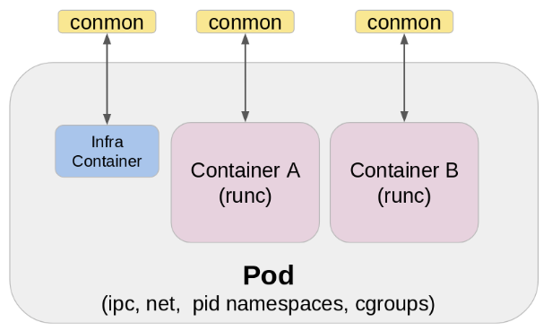
De infracontainer draait geen toepassing. Hij houdt de namespaces van de pod vast zodat de andere containers die kunnen delen, en hij blijft draaien met een pauzeproces dat verder niets doet. Daardoor blijft de pod bestaan, ook als er even geen enkele andere container in draait. Je moet dit niet van buiten kennen, maar dit is wat hij doet:
| Wat hij doet | Waarom dat nodig is |
|---|---|
| Houdt de netwerknamespace vast | Alle containers in de pod delen één IP-adres en dezelfde poorten |
| Draagt de poortbindingen | Daarom geef je -p 8080:80 op bij het aanmaken van de pod en niet bij een container |
| Deelt de ipc (Inter-Process Communication)- en uts (UNIX Time-Sharing System)-namespace | De containers kunnen gedeeld geheugen gebruiken en zien dezelfde hostnaam |
| Hangt onder dezelfde cgroup (control group) | Grenzen aan geheugen en processor gelden voor de pod als geheel |
| Blijft zelf draaien | De pod blijft bestaan, ook als alle andere containers gestopt zijn |
De procesnamespace hoort daar niet bij: die blijft standaard per container. Verderop in dit hoofdstuk zie je hoe je dat kan veranderen.
Samengevat:
-
Een pod is een groep containers die samenwerken alsof ze één toepassing zijn.
-
Ze delen het netwerk en de resource-instellingen van de pod: één IP-adres, één poortenlijst, één geheugenlimiet.
-
Hun opslag delen ze niet. Een volume koppel je aan een container, niet aan de pod.
-
Een Podman-pod is hetzelfde idee als een pod in Kubernetes. Daar komen we later op terug.
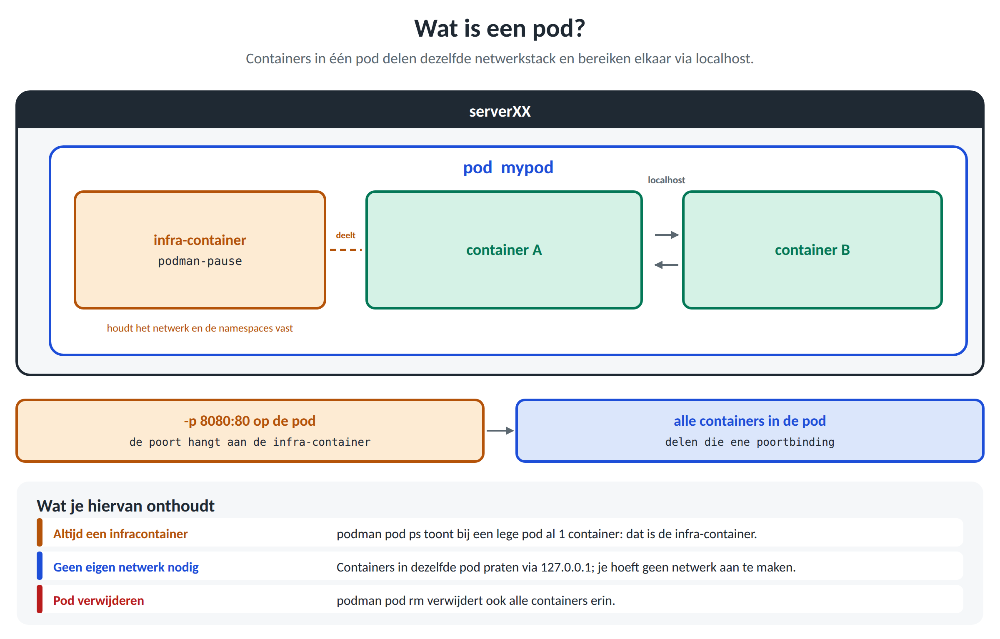
10.3 Werken met pods¶
Hier maken we een lege pod aan.
student@serverXX:~$ podman pod create --name mypod
a518b698331a040cfb62308dad93e56a415bbe9f81d85f8e0407c91377e9f6d6
De pod bevindt zich in de beginstatus 'Gemaakt'.
We listen nu alle pods.
student@serverXX:~$ podman pod ps
POD ID NAME STATUS CREATED INFRA ID # OF CONTAINERS
a518b698331a mypod Created 55 seconds ago 3136cbd2b750 1
Zoals je ziet is er 1 container: dat is de infra-container.
De container heeft als doel:
-
het netwerk en de namespaces van de pod “vasthouden”;
-
een stabiele PID 1 leveren in de pod;
-
te zorgen dat de pod blijft bestaan, ook als er (nog) geen andere containers draaien.
In een gewone container is PID 1 het proces dat bepaalt of de container “leeft”. Als dat proces stopt, stopt de container zoals we al besproken hebben.
Je kan ook een lijst opvragen van alle pods en de bijhorende containers.
student@serverXX:~$ podman ps -a --pod
CONTAINER ID IMAGE … PODNAME
3136cbd2b750 … mypod
De standaard infracontainer is gebaseerd op de registry.access.redhat.com/ubi10/pause image.
We zullen nu een container met de naam myubi in de bestaande pod mypod uitvoeren.
student@serverXX:~$ podman run -dit --name myubi --pod mypod registry.access.redhat.com/ubi10/ubi /bin/bash
We listen nu terug alle pods.
student@serverXX:~$ podman pod ps
POD ID NAME STATUS … # OF CONTAINERS
a518b698331a mypod Running … 2
Zoals je ziet heeft de pod mypod nu 2 containers.
We zullen nu containers listen met info over pod.
student@serverXX:~$ podman ps -a --pod
CONTAINER ID IMAGE … PODNAME
3136cbd2b750 localhost/podman-pause:5.4.0-1750809600 … mypod
6f297a9b39d3 registry.access.redhat.com/ubi10/ubi:latest /bin/bash… mypod
Meer info over het aanmaken van een pod in de manual-page.
student@serverXX:~$ man podman-pod-create
Om de actieve processen van containers in een pod weer te geven, voer je het volgende in:
student@serverXX:~$ podman pod top mypod
USER … %CPU ELAPSED TTY TIME COMMAND
0 … 0.000 6m5.964458803s ? 0s /catatonit -P
Root … 0.000 6m5.966108961s pts/0 0s /bin/bash
Om resourcestatistieken te zien van containers in een of meer pods gebruik je onderstaande:
student@serverXX:~$ podman pod stats -a --no-stream
POD CID NAME CPU % MEM USAGE/ LIMIT …
a518b698331a 3136cbd2b750 a518b698331a-infra 0.00% 49.15kB / 3.795GB …
a518b698331a 6f297a9b39d3 myubi 0.01% 647.2kB / 3.795GB …
Je kan een pod ook inspecteren.
student@serverXX:~$ podman pod inspect mypod
…
Hier zie je dat er 2 containers in de pod mypod zijn.
Stop nu de pod mypod.
student@serverXX:~$ podman pod stop mypod
WARN[0010] StopSignal SIGTERM failed to stop container myubi in 10 seconds, resorting to SIGKILL
mypod
We maken nu een lijst van alle pods met de bijhorende containers.
student@serverXX:~$ podman ps -a --pod
…
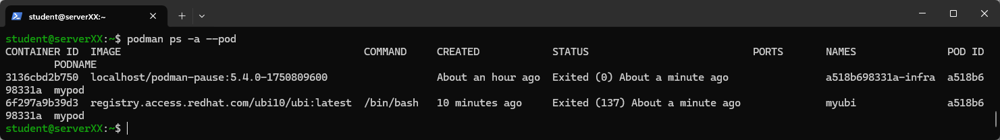
Je kan zien dat de pod mypod en de container myubi de status 'Verlaten' (exited) hebben.
Afhankelijk van je Podman-versie kan bij de infra-container de kolom IMAGE leeg blijven in plaats van localhost/podman-pause:… te tonen; dat verandert niets aan de werking van de pod.
Met podman pod rm verwijder je een gestopte pod, samen met alle containers die erin zitten. Je kan ook meerdere pods na elkaar opgeven, of ze met -a allemaal ineens verwijderen. Draait de pod nog, dan weigert Podman en heb je -f nodig.
student@serverXX:~$ podman pod rm mypod
a518b698331a040cfb62308dad93e56a415bbe9f81d85f8e0407c91377e9f6d6
We controleren of alle containers van de pod en de pod verwijderd zijn.
student@serverXX:~$ podman ps -a
CONTAINER ID IMAGE COMMAND CREATED STATUS PORTS NAMES
student@serverXX:~$ podman pod ps
POD ID NAME STATUS CREATED INFRA ID # OF CONTAINERS
Opmerking: Aan podman pod ps kan je de optie -a niet toevoegen! Met podman pod ps toon je zowel actieve als gestopte pods.
10.4 Wat deelt een pod en wat niet?¶
Hierboven staat dat de containers in een pod hetzelfde netwerk delen. Dat is geen detail: het is de reden waarom pods bestaan. In deze paragraaf maken we zichtbaar wat er precies gedeeld wordt en wat elke container voor zichzelf houdt.
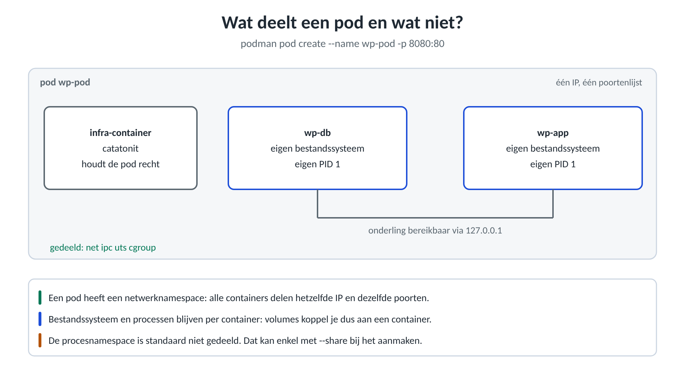
10.4.1 Het netwerk is gedeeld¶
We maken een pod met twee containers: een webserver en een gewone ubi-container.
student@serverXX:~$ podman pod create --name demo-pod
student@serverXX:~$ podman run -d --name demo-web --pod demo-pod registry.access.redhat.com/ubi10/nginx-126 nginx -g "daemon off;"
student@serverXX:~$ podman run -dit --name demo-ubi --pod demo-pod registry.access.redhat.com/ubi10/ubi
Vraag nu in allebei de containers het IP-adres op.
student@serverXX:~$ podman exec demo-web ip -br addr
student@serverXX:~$ podman exec demo-ubi ip -br addr
-br is de afkorting van -brief en zet de gegevens van elke interface op één regel.
Je krijgt twee keer hetzelfde adres te zien. Dat adres hoort bij de infra-container: alle containers van de pod gebruiken daarvan de netwerknamespace. Ze hebben dus niet elk een eigen IP, zoals containers op een eigen netwerk.
Daarom bereikt de ene container de andere via 127.0.0.1, zonder dat er iets gepubliceerd of gekoppeld moet worden.
student@serverXX:~$ podman exec demo-ubi curl -s http://127.0.0.1:8080
<html>
<head><title>403 Forbidden</title></head>
<body>
<center><h1>403 Forbidden</h1></center>
<hr><center>nginx/1.26.3</center>
</body>
</html>
Zit curl niet in het image, installeer het dan eerst met podman exec demo-ubi dnf install -y curl.
Op naam werkt dat niet: de containers in een pod delen één netwerkadres, dus valt er per container niets op te zoeken. Voor hen is de pod één machine, en op een machine spreek je jezelf aan met localhost.
10.4.2 Wat een pod niet deelt¶
Het netwerk is gedeeld, het bestandssysteem niet. Een volume koppel je dus altijd aan een container en nooit aan de pod, en dat is precies wat verderop bij WordPress zullen zien.
Ook de procesnamespace blijft standaard per container. Welke namespaces gedeeld worden, vraag je op bij de pod zelf.
student@serverXX:~$ podman pod inspect demo-pod --format '{{.SharedNamespaces}}'
[ipc net uts]
pid staat daar niet bij. Elke container ziet dus alleen zijn eigen processen.
student@serverXX:~$ podman exec demo-ubi dnf install -y procps-ng
student@serverXX:~$ podman exec demo-ubi ps -ef
UID PID PPID C STIME TTY TIME CMD
root 1 0 0 21:40 pts/0 00:00:00 /bin/bash
root 44 0 0 21:53 ? 00:00:00 ps -ef
Wil je dat anders, dan geef je dat mee bij het aanmaken van de pod. Achteraf kan het niet meer.
student@serverXX:~$ podman pod create --name demo-pod2 --share net,ipc,uts,pid
In zo'n pod ziet een container ook de processen van zijn buren. Dat is handig om te zoeken naar fouten, maar je haalt er wel een stuk isolatie mee weg.
10.4.3 Twee valkuilen met poorten¶
- De eerste valkuil: je kan geen poort publiceren bij een container die in een pod draait.
student@serverXX:~$ podman run -d --name demo-web2 --pod demo-pod -p 9090:8080 registry.access.redhat.com/ubi10/nginx-126 nginx -g "daemon off;"
Error: invalid config provided: published or exposed ports must be defined when the pod is created
De poorten horen bij de netwerknamespace, en die is van de pod. Je legt ze dus vast bij podman pod create, zoals bij wp-pod verderop met -p 8080:80. Ben je er een vergeten, dan moet je de pod opnieuw opbouwen.
- De tweede valkuil: twee containers in dezelfde pod kunnen niet allebei dezelfde poort gebruiken.
Een tweede webserver op poort 8080 start wel, maar valt meteen stil omdat het adres al in gebruik is. Je ziet die melding met podman logs. Zet in een pod dus containers die samen een toepassing vormen, en geen twee toepassingen die toevallig hetzelfde doen.
10.4.4 Pod of eigen netwerk?¶
In hoofdstuk 6 lieten we WordPress en MariaDB samenwerken via een eigen netwerk. Ze vonden elkaar toen op naam. In een pod gebruik je 127.0.0.1. Allebei werken ze, maar ze lossen een ander probleem op.
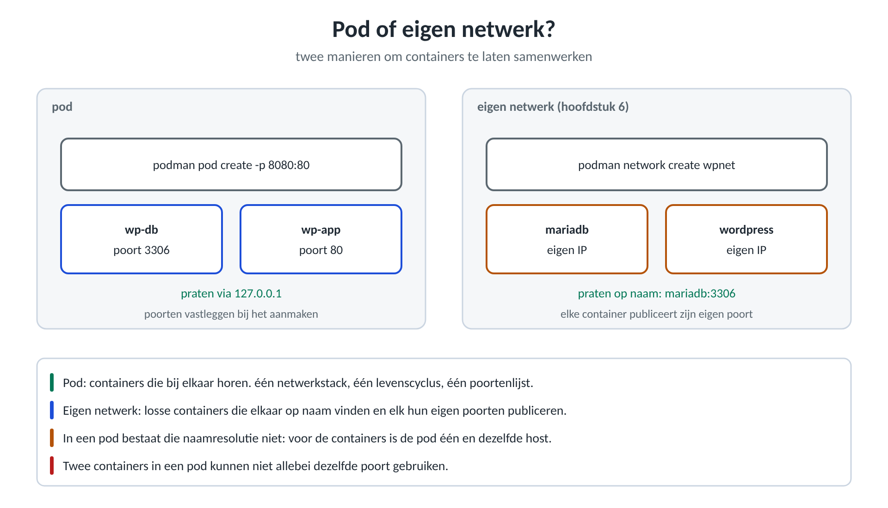
Kies een pod wanneer de containers een geheel vormen, samen moeten starten en stoppen, en aan de buitenkant met een adres en een poortenlijst toekomen.
Kies een eigen netwerk wanneer het losse diensten zijn die elk hun eigen poorten publiceren, of wanneer er later nog containers kunnen bijkomen.
We ruimen onze demonstratie op.
student@serverXX:~$ podman pod rm -f demo-pod demo-pod2
10.5 Een pod beheren¶
Tot nu toe gebruikten we podman pod create, podman pod stop en podman pod rm. De volledige set lijkt sterk op wat je van containers kent, maar werkt telkens op alle containers van de pod tegelijk.
-
podman pod start wp-pod: start alle containers van de pod;
-
podman pod stop wp-pod: stopt ze, met dezelfde wachttijd van tien seconden per container;
-
podman pod restart wp-pod: stopt en start ze opnieuw;
-
podman pod pause wp-pod en podman pod unpause wp-pod: bevriezen de processen zonder de containers te stoppen;
-
podman pod kill wp-pod: stuurt meteen een signaal, standaard SIGKILL; met --signal kies je zelf welk;
-
podman pod rm wp-pod: verwijdert de pod en al zijn containers, met -f ook als ze nog draaien;
-
podman pod prune: ruimt alle gestopte pods op.
Grenzen aan geheugen en processor leg je op het niveau van de pod. Alle containers samen moeten het dan met die limiet doen.
Als voorbeeld een pod waarvan alle containers samen hoogstens 512 MB geheugen en één processorkern mogen gebruiken.
student@serverXX:~$ podman pod create --name klein-pod --memory 512m --cpus 1
We verwijderen deze pod.
student@serverXX:~$ podman pod rm -f klein-pod
10.6 WordPress¶
10.6.1 Zonder gegevens op ServerXX¶
We hebben WordPress tot nu toe op 2 keer verschillende manieren geïnstalleerd:
-
Via de CLI: 2 containers en een user-defined netwerk opgezet
-
Via podman compose
We doen het nu een derde keer, nu met een pod.
De belangrijkste voordelen hiervan:
-
Eén gedeelde netwerknamespace
Containers in dezelfde pod praten rechtstreeks met elkaar via localhost en gedeelde poorten. Je hoeft dus géén apart user-defined netwerk meer te maken of linken. -
Eenvoudiger lifecycle management
Veel handiger dan containers individueel beheren. -
Infra-container houdt de pod stabiel
Zoals reeds besproken: de pod blijft actief zolang de infra-container draait, ook als WordPress of de database herstart. -
Dichter bij Kubernetes-concepten
Pods zijn het basisconcept van Kubernetes. Werken met Podman pods helpt dus om ervaring op te doen met hoe Kubernetes applicaties structureert.
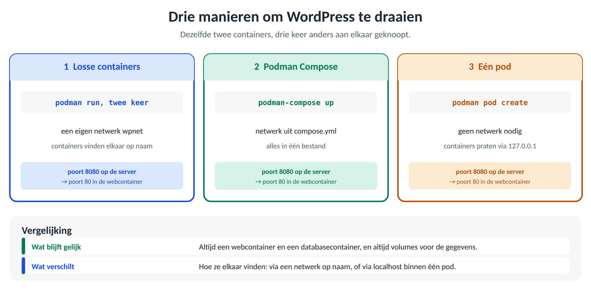
We maken nu eerst de pod aan.
student@serverXX:~$ podman pod create --name wp-pod -p 8080:80
De pod heeft, zoals je verwacht, als naam wp-pod.
We maken hier ook een poortverbinding. Poort 8080 op de host wordt verbonden met poort 80 in de pod. De poortbinding wordt toegewezen aan de infra-container van de pod. Alle containers in de pod delen dezelfde netwerkstack, dus ze kunnen intern communiceren en zijn extern bereikbaar via die ene poort.
We starten nu een container in de pod op van mariadb. In feite komt dat overeen met hetgeen we al gedaan hebben. Alleen zie je dat de container in de pod wp-pod wordt gestart.
student@serverXX:~$ podman run -d --restart=always --pod=wp-pod -e MYSQL_ROOT_PASSWORD="dbpass" -e MYSQL_DATABASE="wp" -e MYSQL_USER="wordpress" -e MYSQL_PASSWORD="wppass" --name=wp-db mariadb
57e09fc0bf994b418a68857d5521958a877024b7ca1a86186a6b08d348063a84
We kijken nu naar de containers die draaien in deze pod.
student@serverXX:~$ podman ps -a --pod
…
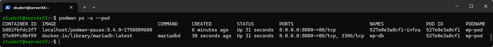
Zoals je ziet draait de infra-container en de mariadb-container.
We starten nu ook de wordpress-container op gekoppeld aan dezelfde pod.
student@serverXX:~$ podman run -d --restart=always --pod=wp-pod -e WORDPRESS_DB_NAME="wp" -e WORDPRESS_DB_USER="wordpress" -e WORDPRESS_DB_PASSWORD="wppass" -e WORDPRESS_DB_HOST="127.0.0.1" --name wp-web wordpress
c06cecef4e7ce1317c04fc310dd5fd8aca0443b14488ea0f6ed5f0455cbec2fe
Je ziet hier dat, zoals beschreven hierboven, er connectie kan gemaakt worden met WordPress via localhost (127.0.0.1).
We kijken nu naar de containers die draaien in deze pod.
student@serverXX:~$ podman ps -a --pod
…
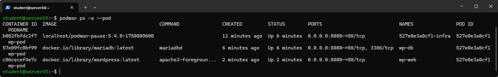
Je ziet nu dat de 3 containers draaien.
Je kan nu naar de browser gaan en de nodige instellingen doen zoals we al enkele keren gedaan hebben.
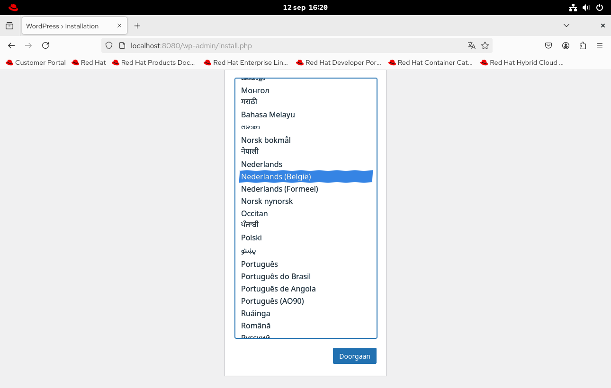
Na je test verwijderen we de pod nu met de bijhorende containers.
student@serverXX:~$ podman pod rm wp-pod -f
527e0e3a0cf164b224503feea89965f6457d507d8a0c313117a401b1dae6b7e0
10.6.2 Met gegevens op ServerXX¶
Wat we zojuist gedaan hebben, is niet erg verstandig omdat de gegevens niet worden opgeslagen op de host zelf maar in de container.
-
Als je geen volumes koppelt, worden gegevens in de container zelf opgeslagen en gaan verloren als je de container verwijdert. De gegevens worden nooit in de pod opgeslagen.
-
Als je named volumes of bind volumes gebruikt (zoals we nu gaan doen), worden gegevens op de host opgeslagen, maar toegewezen aan een specifieke container.
We maken nu eerst de mappen aan op de host.
student@serverXX:~$ mkdir -p wpdata/{html,db}
We maken nu weer de pod aan.
student@serverXX:~$ podman pod create --name wp-pod -p 8080:80
f5fe87b906b6dcdef8e833a1cd379fa29c5cdf25b426c52e18b5db36dbb4466d
We starten nu de MariaDB-container met het bind mount volume op.
student@serverXX:~$ podman run -d --pod wp-pod --name wp-db -e MYSQL_ROOT_PASSWORD="admin123" -e MYSQL_DATABASE="wordpress" -e MYSQL_USER="wpuser" -e MYSQL_PASSWORD="user123" -v /home/student/wpdata/db:/var/lib/mysql:Z docker.io/library/mariadb:latest
366306c21f0a7a4b0c2e582a91380ead1194a78f88a1f5082d2a0f478435700a
We starten nu de WordPress-container met het gekoppeld volume.
student@serverXX:~$ podman run -d --pod wp-pod --name wp-app -e WORDPRESS_DB_HOST="127.0.0.1" -e WORDPRESS_DB_NAME="wordpress" -e WORDPRESS_DB_USER="wpuser" -e WORDPRESS_DB_PASSWORD="user123" -v $HOME/wpdata/html:/var/www/html:Z docker.io/library/wordpress:latest
bd14ebea558e413f0f67ebb366f3204ba2309d8747fa537f23a635e898d9fef6
We kijken nu naar de containers die draaien in deze pod.
student@serverXX:~$ podman ps -a --pod
…
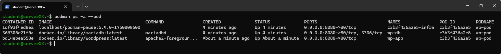
Je ziet nu dat de 3 containers draaien.
Je kan nu naar de browser gaan en de nodige instellingen doen zoals we al enkele keren gedaan hebben.
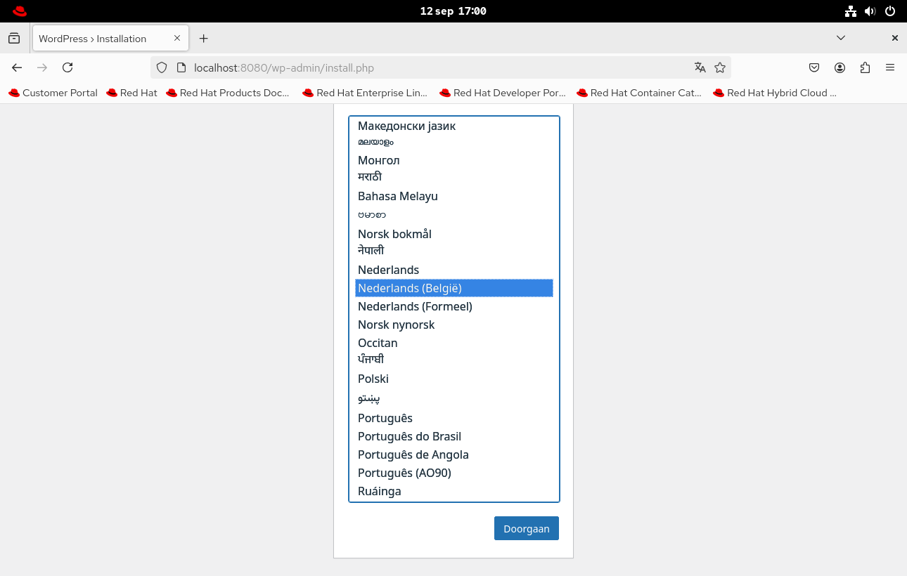
Stel in zoals gebruikelijk.
Na instellen krijg je dit bijvoorbeeld.
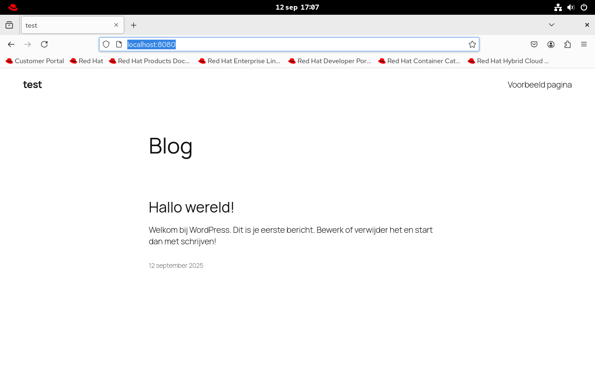
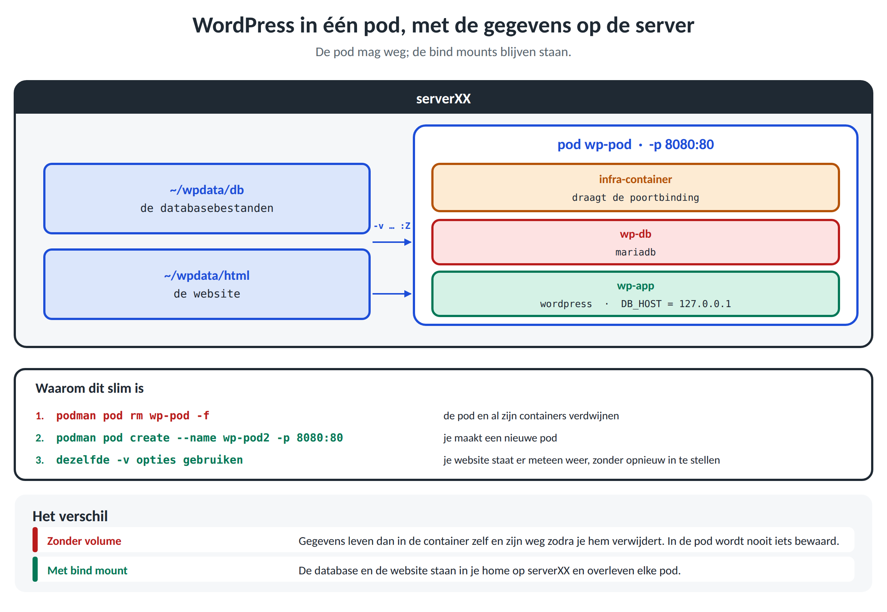
We stoppen en verwijderen nu de pod.
student@serverXX:~$ podman pod stop wp-pod
student@serverXX:~$ podman pod rm wp-pod -f
Het mooie is nu dat wanneer de pod verwijderd is je nog steeds terug een nieuwe pod kan opbouwen met de zelfde bind mounts en de website voorhanden blijft. Je moet dus niets meer opnieuw instellen omdat de database en website op ServerXX staan.
student@serverXX:~$ podman pod create --name wp-pod2 -p 8080:80
7ea8e4f8784a52e847024f57947b367e4f95bb4c3f4b20d73195d7a6d062ca0b
student@serverXX:~$ podman run -d --pod wp-pod2 --name wp-db -e MYSQL_ROOT_PASSWORD="admin123" -e MYSQL_DATABASE="wordpress" -e MYSQL_USER="wpuser" -e MYSQL_PASSWORD="user123" -v /home/student/wpdata/db:/var/lib/mysql:Z docker.io/library/mariadb:latest
08360a21128d5d20797fe20cae0fdb019eb1806b4786ccc255c094e46addced1
student@serverXX:~$ podman run -d --pod wp-pod2 --name wp-app -e WORDPRESS_DB_HOST="127.0.0.1" -e WORDPRESS_DB_NAME="wordpress" -e WORDPRESS_DB_USER="wpuser" -e WORDPRESS_DB_PASSWORD="user123" -v $HOME/wpdata/html:/var/www/html:Z docker.io/library/wordpress:latest
93d67641b7ff74a7283e8d3172d3744442aa2a8a6dc66dd31352e5505d9fadcb
Als je nu terug gaat naar http://localhost:8080 krijg je terug dezelfde website zonder dat je dus nog moet instellen.